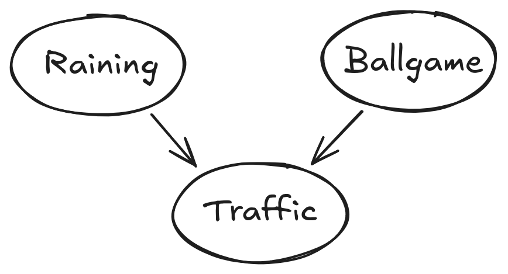
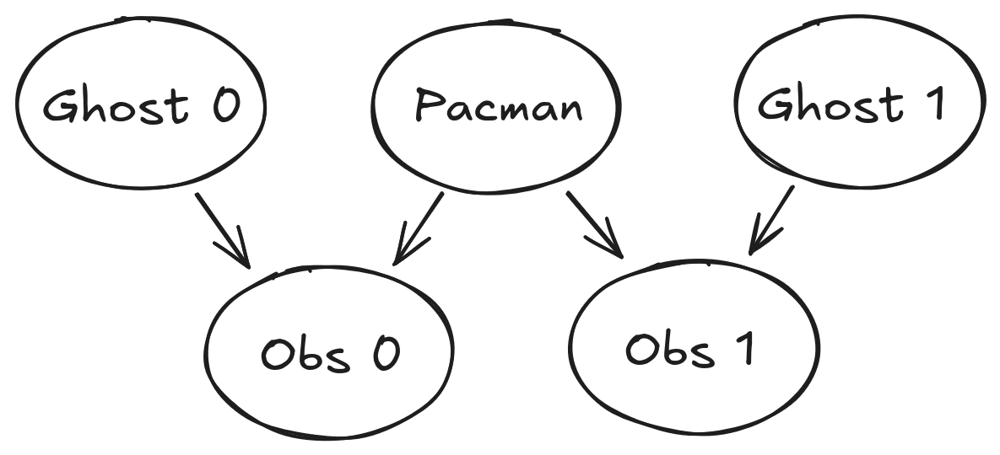
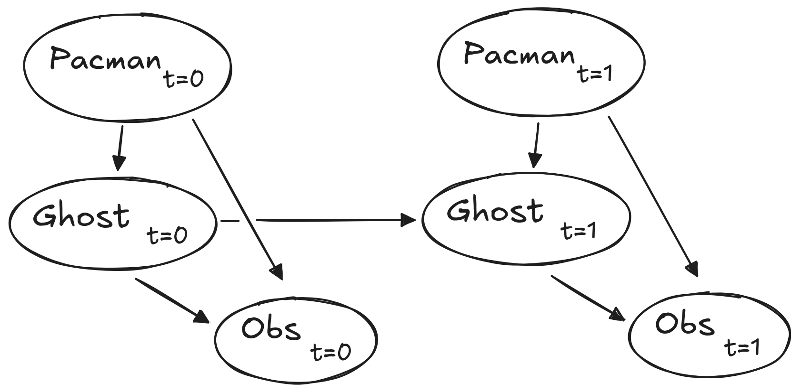
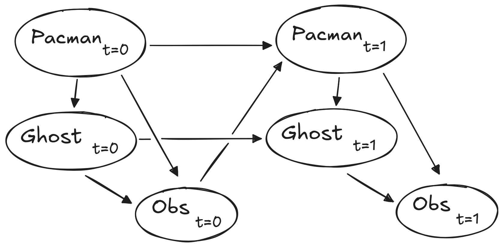

Homework Four
Tracking
This assignment is individual effort; adhere to the syllabus collaboration policy and ask me if you have any questions.
Ghostbusters
We have turned the tables. Now, Pacman will hunt the ghosts.
There is one caveat: the ghosts are invisible, and Pacman can only listen. Your sensor is a noisy reading of Manhattan distance to each ghost. To succeed, hunt and eat all ghosts on the map.
Download the starter code in tracking dot zip and try the game yourself:
python busters.pyThe blocks of color indicate where the each ghost could possibly be, given the noisy distance readings provided to Pacman. The noisy distances at the bottom of the display are always non-negative, and always within 7 of the true distance. The probability of a distance reading decreases exponentially with its difference from the true distance.
Your primary task in this project is to implement inference to track the ghosts. For the keyboard-based game above, a crude form of inference was implemented for you by default: all squares in which a ghost could possibly be are shaded by the color of the ghost.
Throughout the rest of this project, you will implement algorithms for performing both exact and approximate inference using Bayes Nets.
Submission: You will edit bustersAgents.py, inference.py, and factorOperations.py. When complete, submit a single uncompressed tar of these files to the submit server. This assignment will not be graded immediately by the server, but I will run the same test cases that you have: if you complete the assignment according to the instructions, the grade you get from autograding locally is the grade you’ll get on the assignment.
While watching and debugging your code with the autograder, it will be helpful to have some understanding of what the autograder is doing. There are 2 types of tests in this project, as differentiated by their .test files found in the subdirectories of the test_cases folder. For tests of class DoubleInferenceAgentTest, you will see visualizations of the inference distributions generated by your code, but all Pacman actions will be pre-selected according to the actions of the staff implementation. This is necessary to allow comparision of your distributions with the staff’s distributions. The second type of test is GameScoreTest, in which your BustersAgent will actually select actions for Pacman and you will watch your Pacman play and win games.
For this project, it is possible sometimes for the autograder to time out if running the tests with graphics. To accurately determine whether or not your code is efficient enough, you should run the tests with the --no-graphics flag. If the autograder passes with this flag, then you will receive full points, even if the autograder times out with graphics.
Provided Code: Bayesian Networks
First, take a look at bayesNet.py to see the classes you’ll be working with – BayesNet and Factor. You can also run this file to see an example BayesNet and associated Factors: python bayesNet.py.
You should look at the printStarterBayesNet function – there are helpful comments that can make your life much easier later on.
The Bayes Net created in this function is shown below:

A summary of the terminology is given below:
Bayes Net: This is a representation of a probabilistic model as a directed acyclic graph and a set of conditional probability tables, one for each variable, as shown in lecture. The Traffic Bayes Net above is an example.
Factor: This stores a table of probabilities, although the sum of the entries in the table is not necessarily 1.
- A factor is of the general form $f(X_1,…,X_m,y_1,…,y_n ∣ Z_1,…,Z_p,w_1,…,w_q) $.
- Lower case variables have already been assigned.
- For each possible assignment of values to the \(X_i\) and \(Z_j\) variables, the factor stores a single number.
- The \(Z_j\) and \(w_k\) variables are conditioned while the \(X_i\) and \(y_l\) variables are unconditioned.
Conditional Probability Table (CPT): This is a factor satisfying two properties:
- Its entries must sum to 1 for each assignment of the conditional variables.
- There is exactly one unconditioned variable.
- The Traffic Bayes Net stores the following CPTs:
- \(P(Raining)\)
- \(P(Ballgame)\)
- \(P(Traffic | Ballgame, Raining)\)
Q1 (2 pts) BayesNet Structure
Implement the constructBayesNet function in inference.py.
It constructs an empty Bayes Net with the structure described below.1
1 A Bayes Net is incomplete without the actual probabilities, but factors are defined and assigned by starter code separately; you don’t need to worry about it. If you are curious, you can take a look at an example of how it works in printStarterBayesNet in bayesNet.py. Reading this function can also be helpful for doing this question.
The simplified ghost hunting world is generated according to the following Bayes net:

Don’t worry if this looks complicated! We’ll take it step by step. As described in the code for constructBayesNet, we build the empty structure by listing all of the variables, their values, and the edges between them. This figure shows the variables and the edges, but what about their domains?
- Add variables and edges based on the diagram.
- Pacman and the two ghosts can be anywhere in the grid (we ignore walls for this).
- Add all possible position tuples for these.
- Observations here are non-negative, equal to Manhattan distances of Pacman to ghosts \(\pm\) noise.
To test and debug your code, run
python autograder.py -q q1Q2 (3 pts) Join Factors
Implement the joinFactors function in factorOperations.py. It takes in a list of Factors and returns a new Factor whose probability entries are the product of the corresponding rows of the input Factors.
joinFactors can be used as the product rule/law of total probability:
- For example, if we have a factor of the form \(P(X∣Y)\) and another factor of the form \(P(Y)\), then joining these factors will yield \(P(X,Y)\).
joinFactorsallows us to incorporate probabilities for conditioned variables (in this case, \(Y\)).- However, you should not assume that
joinFactorsis called on probability tables.- It is possible to call joinFactors on Factors whose rows do not sum to 1.
Grading: To test and debug your code, run
python autograder.py -q q2It may be useful to run specific tests during debugging, to see only one set of factors print out. For example, to only run the first test, run:
python autograder.py -t test_cases/q2/1-product-ruleYour joinFactors function should return a new Factor.
Here are some examples of what joinFactors can do:
- \(\texttt{joinFactors}(P(X∣Y),P(Y)) \rightarrow P(X,Y)\)
- \(\texttt{joinFactors}(P(V,W∣X,Y,Z),P(X,Y∣Z)) \rightarrow P(V,W,X,Y∣Z)\)
- \(\texttt{joinFactors}(P(X∣Y,Z),P(Y))=P(X,Y∣Z)\)
- \(\texttt{joinFactors}(P(V∣W),P(X∣Y),P(Z))=P(V,X,Z∣W,Y)\)
For a general joinFactors operation, which variables are unconditioned in the returned Factor? Which variables are conditioned?
Factorobjects store avariableDomainsDict, which maps each variable to a list of values that it can take on (its domain).- A
Factorgets itsvariableDomainsDictfrom theBayesNetfrom which it was instantiated. - As a result, it contains all the variables of the
BayesNet, not only the unconditioned and conditioned variables used in theFactor. - For this problem, you may assume that all the input
Factorobjects have come from the sameBayesNet, and so theirvariableDomainsDictsare all the same.
Q3 (3 pts) Eliminate Factors
Implement the eliminate function in factorOperations.py.
- It takes a
Factorand a variable to eliminate and returns a newFactorthat does not contain that variable. - This corresponds to summing all of the entries in the
Factorwhich only differ in the value of the variable being eliminated.
Grading: To test and debug your code, run
python autograder.py -q q3It may be useful to run specific tests during debugging, to see only one set of factors print out. For example, to only run the first test, run:
python autograder.py -t test_cases/q3/1-simple-eliminateYour eliminate should return a new Factor.
eliminate can be used to marginalize variables from probability tables. For example:
- \(\texttt{eliminate}(P(X,Y∣Z),Y)=P(X∣Z)\)
- \(\texttt{eliminate}(P(X,Y∣Z),X)=P(Y∣Z)\)
For a general eliminate operation, which variables are unconditioned in the returned Factor? Which variables are conditioned?
Remember that Factors store the variableDomainsDict of the original BayesNet, and not only the unconditioned and conditioned variables that they use. As a result, the returned Factor should have the same variableDomainsDict as the input Factor.
Q4 (2 pts) Variable Elimination
Implement the inferenceByVariableElimination function in inference.py. It answers a probabilistic query, which is represented using a BayesNet, a list of query variables, and the evidence.
Grading: To test and debug your code, run
python autograder.py -q q4It may be useful to run specific tests during debugging, to see only one set of factors print out. For example, to only run the first test, run:
python autograder.py -t test_cases/q4/1-disconnected-eliminateThe algorithm should iterate over hidden variables in elimination order, performing joining over and eliminating that variable, until the only the query and evidence variables remain.
The sum of the probabilities in your output factor should sum to 1 (so that it is a true conditional probability, conditioned on the evidence).
Look at the
inferenceByEnumerationfunction ininference.pyfor an example on how to use the desired functions.Reminder: Inference by enumeration first joins over all the variables and then eliminates all the hidden variables.
- In contrast, variable elimination interleaves join and eliminate by iterating over all the hidden variables and perform a join and eliminate on a single hidden variable before moving on to the next hidden variable.
You will need to take care of the special case where a factor you have joined only has one unconditioned variable (the docstring specifies what to do in greater detail).
Q5 (1 pt)
Unfortunately, having time steps will grow our graph far too much for variable elimination to be viable. Instead, we will use the Forward Algorithm for HMM’s for exact inference, and Particle Filtering for even faster but approximate inference.
For the rest of the project, we will be using the DiscreteDistribution class defined in inference.py to model belief distributions and weight distributions.
- This class is an extension of the built-in Python dictionary class, where the keys are the different discrete elements of our distribution, and the corresponding values are proportional to the belief or weight that the distribution assigns that element.
- This question asks you to fill in the missing parts of this class, which will be crucial for later questions (even though this question itself is worth no points).
Fill in the
normalizemethod, which normalizes the values in the distribution to sum to one, but keeps the proportions of the values the same. Use thetotalmethod to find the sum of the values in the distribution. For an empty distribution or a distribution where all of the values are zero, do nothing. Note that this method modifies the distribution directly, rather than returning a new distribution.Fill in the
samplemethod, which draws a sample from the distribution, where the probability that a key is sampled is proportional to its corresponding value. Assume that the distribution is not empty, and not all of the values are zero. Note that the distribution does not necessarily have to be normalized prior to calling this method. You may find Python’s built-inrandom.random()function useful for this question.Implement the
getObservationProbmethod in theInferenceModulebase class ininference.py.- This method takes in an observation (which is a noisy reading of the distance to the ghost), Pacman’s position, the ghost’s position, and the position of the ghost’s jail.
- The method returns the probability of the noisy distance reading given Pacman’s position and the ghost’s position. In other words, we want to return \(P(noisyDistance∣pacmanPosition, ghostPosition)\).
- The distance sensor has a probability distribution over distance readings given the true distance from Pacman to the ghost. This distribution is modeled by the function
busters.getObservationProbability(noisyDistance, trueDistance), which returns \(P(noisyDistance∣trueDistance)\) and is provided for you. You should use this function to help you solve the problem, and use the providedmanhattanDistancefunction to find the distance between Pacman’s location and the ghost’s location. - There is the special case of jail that we have to handle as well. Specifically, when we capture a ghost and send it to the jail location, our distance sensor deterministically returns
None, and nothing else (observation =Noneif and only if ghost is in jail). One consequence of this is that if the ghost’s position is the jail position, then the observation isNonewith probability 1, and everything else with probability 0. Make sure you handle this special case in your implementation; we effectively have a different set of rules for whenever ghost is in jail, as well as whenever observation isNone.
To test your code and run the autograder for this question:
python autograder.py -q q5Q6 (2 pts) Exact Inference Observation
In this question, you will implement the observeUpdate method in the ExactInference class of inference.py to correctly update the agent’s belief distribution over ghost positions given an observation from Pacman’s sensors. You are implementing the online belief update for observing new evidence.
- The
observeUpdatemethod should, for this problem, update the belief at every position on the map after receiving a sensor reading. - You should iterate your updates over the variable
self.allPositionswhich includes all legal positions plus the special jail position. - Beliefs represent the probability that the ghost is at a particular location, and are stored as a
DiscreteDistributionobject in a field calledself.beliefs, which you should update.
Be sure you know what inference problem you are trying to solve. You should use the function self.getObservationProb that you wrote in the last question, which returns the probability of an observation given Pacman’s position, a potential ghost position, and the jail position.
You can obtain Pacman’s position using
gameState.getPacmanPosition(), and the jail position usingself.getJailPosition().In the Pacman display, high posterior beliefs are represented by bright colors, while low beliefs are represented by dim colors. You should start with a large cloud of belief that shrinks over time as more evidence accumulates. As you watch the test cases, be sure that you understand how the squares converge to their final coloring.
Your busters agents have a separate inference module for each ghost they are tracking. That’s why if you print an observation inside the observeUpdate function, you’ll only see a single number even though there may be multiple ghosts on the board.
To run the autograder for this question and visualize the output:
python autograder.py -q q6If you want to run this test (or any of the other tests) without graphics you can add the following flag:
python autograder.py -q q6 --no-graphicsQ7 (2 pts) Exact Inference with Time Elapse
In the previous question you implemented belief updates for Pacman based on his observations. Pacman’s observations are not his only source of knowledge about where a ghost may be. Pacman also has knowledge about the ways that a ghost may move; namely that the ghost can not move through a wall or more than one space in one time step. You have a model for the Ghost’s behavior.
To understand why this is useful to Pacman, consider the following scenario in which there is Pacman and one Ghost. Pacman receives many observations which indicate the ghost is very near, but then one which indicates the ghost is very far. The reading indicating the ghost is very far is likely to be the result of a buggy sensor. Pacman’s prior knowledge of how the ghost may move will decrease the impact of this reading since Pacman knows the ghost could not move so far in only one move.
In this question, you will implement the elapseTime method in ExactInference. The elapseTime step should, for this problem, update the belief at every position on the map after one time step elapsing. Your agent has access to the action distribution for the ghost through self.getPositionDistribution. In order to obtain the distribution over new positions for the ghost, given its previous position, use this line of code:
newPosDist = self.getPositionDistribution(gameState, oldPos)Where oldPos refers to the previous ghost position. newPosDist is a DiscreteDistribution object, where for each position p in self.allPositions, newPosDist[p] is the probability that the ghost is at position p at time t + 1, given that the ghost is at position oldPos at time t. Note that this call can be fairly expensive, so if your code is timing out, one thing to think about is whether or not you can reduce the number of calls to self.getPositionDistribution.
Since Pacman is not observing the ghost’s actions, these actions will not impact Pacman’s beliefs. Over time, Pacman’s beliefs will come to reflect places on the board where he believes ghosts are most likely to be given the geometry of the board and ghosts’ possible legal moves, which Pacman already knows.
For the tests in this question we will sometimes use a ghost with random movements and other times we will use the GoSouthGhost. This ghost tends to move south so over time, and without any observations, Pacman’s belief distribution should begin to focus around the bottom of the board. To see which ghost is used for each test case you can look in the .test files.
The below diagram shows what the Bayes Net/ Hidden Markov model for what is happening.2 Still, you should rely on the above description for implementation because some parts are implemented for you, i.e. getPositionDistribution is abstracted to be \(P(G_{t+1}∣gameState,G{t})\).
2 Only one Ghost is shown– each ghost is independent, given the Pacman position.

To run the autograder for this question and visualize the output:
python autograder.py -q q7If you want to run this test (or any of the other tests) without graphics you can add the following flag:
python autograder.py -q q7 --no-graphicsAs you watch the autograder output, remember that lighter squares indicate that Pacman believes a ghost is more likely to occupy that location, and darker squares indicate a ghost is less likely to occupy that location. For which of the test cases do you notice differences emerging in the shading of the squares? Can you explain why some squares get lighter and some squares get darker?
Q8 (1 pt) Exact Inference Full Test
Now you will hunt the ghosts.
We will use your observeUpdate and elapseTime implementations together to keep an updated belief distribution, and your simple greedy agent will choose an action based on the latest distributions at each time step.
- In the simple greedy strategy, Pacman assumes that each ghost is in its most likely position according to his beliefs, then moves toward the closest ghost.
- Up to this point, Pacman has moved by randomly selecting a valid action.
Implement the chooseAction method in GreedyBustersAgent in bustersAgents.py. Your agent should first find the most likely position of each remaining ghost, then choose an action that minimizes the maze distance to the closest ghost.
To find the maze distance between any two positions pos1 and pos2:
self.distancer.getDistance(pos1, pos2)To find the successor position of a position after an action:
Actions.getSuccessor(position, action)You are provided with livingGhostPositionDistributions, a list of DiscreteDistribution objects representing the position belief distributions for each of the ghosts that are still uncaptured.
If correctly implemented, your agent should win the game in q8/3-gameScoreTest with a score greater than 700 at least 8 out of 10 times. Note: the autograder will also check the correctness of your inference directly, but the outcome of games is a reasonable sanity check.
We can represent how our greedy agent works with the following modification to the previous diagram:

To run the autograder for this question and visualize the output:
python autograder.py -q q8If you want to run this test (or any of the other tests) without graphics you can add the following flag:
python autograder.py -q q8 --no-graphicsQ9 (1 pts) Approximate Inference (Initialization and Beliefs)
Approximate inference is very trendy among ghost hunters this season. For the next few questions, you will implement a particle filtering algorithm for tracking a single ghost.
First, implement the functions initializeUniformly and getBeliefDistribution in the ParticleFilter class in inference.py. A particle (sample) is a ghost position in this inference problem. Note that, for initialization, particles should be evenly (not randomly) distributed across legal positions in order to ensure a uniform prior. We recommend thinking about how the mod operator is useful for initializeUniformly.
Note that the variable you store your particles in must be a list. A list is simply a collection of unweighted variables (positions in this case). Storing your particles as any other data type, such as a dictionary, is incorrect and will produce errors. The getBeliefDistribution method then takes the list of particles and converts it into a DiscreteDistribution object.
To test your code and run the autograder for this question:
python autograder.py -q q9Q10 (2 pts) Particle Filter - Observation
Next, we will implement the observeUpdate method in the ParticleFilter class in inference.py. This method constructs a weight distribution over self.particles where the weight of a particle is the probability of the observation given Pacman’s position and that particle location. Then, we resample from this weighted distribution to construct our new list of particles.
You should again use the function self.getObservationProb to find the probability of an observation given Pacman’s position, a potential ghost position, and the jail position.
The sample method of the
DiscreteDistributionclass will be useful.You can obtain Pacman’s position using
gameState.getPacmanPosition(), and the jail position usingself.getJailPosition().There is one special case– degeneracy– that a correct implementation must handle. When all particles receive zero weight, the list of particles should be reinitialized by calling
initializeUniformly.- The
totalmethod of theDiscreteDistributionmay be useful.
- The
To run the autograder for this question and visualize the output:
python autograder.py -q q10If you want to run this test (or any of the other tests) without graphics you can add the following flag:
python autograder.py -q q10 --no-graphicsQ11 (2 pts) Particle Filter 💪
Implement the elapseTime method in the ParticleFilter class in inference.py. This function should construct a new list of particles that corresponds to each existing particle in self.particles advancing a time step, and then assign this new list back to self.particles. When complete, you should be able to track ghosts nearly as effectively as with exact inference.
Note that in this question, we will test both the elapseTime method in isolation, as well as the full implementation of the particle filter combining elapseTime and observe.
As in the elapseTime method of the ExactInference class, you should use:
self.getPositionDistribution(gameState, oldPos)This line of code obtains the distribution over new positions for the ghost, given its previous position (oldPos). The sample method of the DiscreteDistribution class will also be useful.
To run the autograder for this question and visualize the output:
python autograder.py -q q11If you want to run this test (or any of the other tests) without graphics you can add the following flag:
python autograder.py -q q11 --no-graphicsNote that even with no graphics, this test may take several minutes to run.